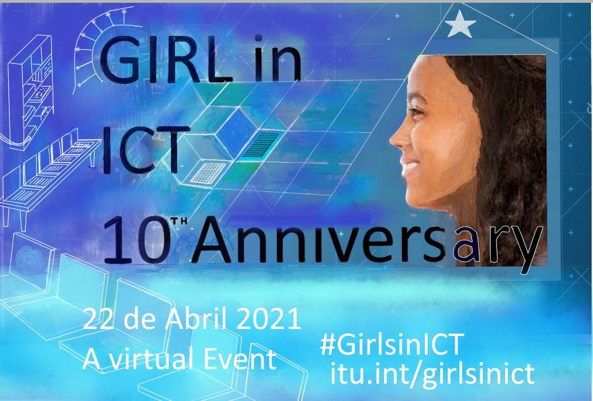

Por ese motivo te anunciamos que este 22 de abril se celebra el 10 aniversario de las niñas internacionales,las GirlinICT en las TIC. Por este motivo, la UIT invita a contribuir en esta celebración a trvés de la organización de programas, capacitaciones y actividades durante el año.

para que desde temprana l@s jovenes puedas tener la motivacion y el conocimiento
para poder eleguir una orientacion tecnologica. La idea es principamente incentivar el animo de las chicas a elegir carreras tecnológicas para equilibrar la baja participacón de mujeres en
esas areas, y para que halla una mejor participación y ocupación laboral en empresas que
neccesitan personal preparado ya que hay una gran oferta de empleos pero poca demanda de personal
calificado.Por ese motivo diferentes instituciones ya sean sociales y/o gubernamentales apoyan
diferentes eventos culturales ,uno de ellos es Las GirlinICT
Los estudiandes de 6to de bachillerato de informática de dicha institución por medio de su profesor Daniel Dias, tubieron 2 conferencias por Zoon con 2 emprendedoras mujeres que incurcionan en el area de las tecnologías informáticas .Los alumnos tubieron la oportunidad de escuchar las anécdotas y experiencias laboral de esas exitosas trabajadoras una de las entrevistadas fue ___--------------_____y la otra fue Malvina Betarte la cual brindó un motivador testimonio a los futuros informáticos que antentos escuchaban su relato a la vez que consultaban sus curiosidades y dudas . entrevista que puedes consultar en el boton (ir a entrevista)
Ada Lovelace es considerada la madre de la informática, la historia nos cuenta una
que en el siglo XIX, creó el primer algoritmo diseñado para ser procesado por una máquina.
pero esa y otras anécdotas las puedes ver si atraves del boton entras al sitio Girls in ICT,
historias de éxito contra la brecha de género.
versitio
***********************************************************************************************
************************************************************************************************
************************************************************************************************
************************************************************************************************

Existe un desconocimiento de los chic@s y también de
parte de sus padres sobre que carreras seguir, tal vez
porque hay una tradición cultural que jenera una influecia
de los padres hacia sus hijas,que ven a la ingeniería como
cosa de hombres
Hay como un antiguo estereotipo social que genera como u tabú
y eso en cierta forma limita a las chicas a la hora de elegir
una carrera basada en las tecnología.
Hoy en dia hay una fuerte demanda de mujeres en empresas que
ven la necesidad de que halla un cierto numero de mujeres.
El estimulo familiar es muy importante para que de alguna
manera se rompa esa tradición y que a futuro cambie el bajo
porcentaje de ocupacion femenina en las empresas relacionadas
a la ciencia y la tecnología

Como todos los cuartos jueves de abril
desde hace cuatro años, Uruguay se suma
al Día Internacional de las Chicas en las
Tecnologías de la Información y Comunicación.
La Cámara Uruguaya de Tecnologías de la
Información (Cuti) convocó este año a las
más de 300 empresas que nuclea a sumarse
a la iniciativa y abrir sus puertas a
adolescentes interesadas en conocer por
dentro cómo es el trabajo de una mujer que
se dedica a la tecnología.
Cuti lleva adelante iniciativas que promueven el desarrollo y la incorporación de talentos a la industria, dado que en Uruguay la demanda insatisfecha de profesionales y técnicos que enfrenta el sector TIC es el principal elemento que dificulta las posibilidades de crecimiento. Con este objetivo, trabaja en articulación con diversas organizaciones para desarrollar iniciativas orientadas principalmente a jóvenes y mujeres, como es el caso del Proyecto Jóvenes a Programar, iniciativa apoyada por el BID e INEFOP.
https://www.cuti.org.uy/novedades/841-por-mas-mujeres-en-tecnologia
Estudios en Argentina revelan que las orientaciones que eligen los chicos estan decididas
ya desde muy temprana edad eso muestra en c"ierto modo una influncia cultural,Tal es asi que
de las carreras de superior preferidas por las mujeres, las de informática ocupan el penúltimo
lugar de preferencia y "son elegidas sólo por un 2,3% de de chicas entrevistadas. Por el
contrario, en el caso de los varones, la computación e informática son las carreras con más
preferencia".
https://www.bbc.com/mundo/noticias/2015/10/151002_finde_tecnologia_mujeres
_estudiar_computacion_ciencia_mr
Si no tienes en mente una carrera? quiza podamos ayudarte
Te gusta la tecnología y no sabes qué orientacion seguir?,
revisa las lista con las especialidades universitarias
relacionadas a ese tema.
revisa la lista de cursos de la sona
En San Jose de Mayo